Estos son pasos para conectar su instancia de VSCode a su organización. Aquí no hay nada que entender, solo pasos estándar a seguir.
Open VSCode and press Command + Shift + P for macOS users or Control + Shift + P for Windows users and search for SFDX: Create a new project with manifest.
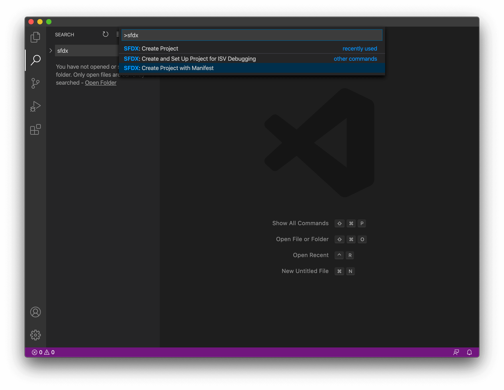
Después de unos segundos, será recibido con tres opciones. ElegirEmpty
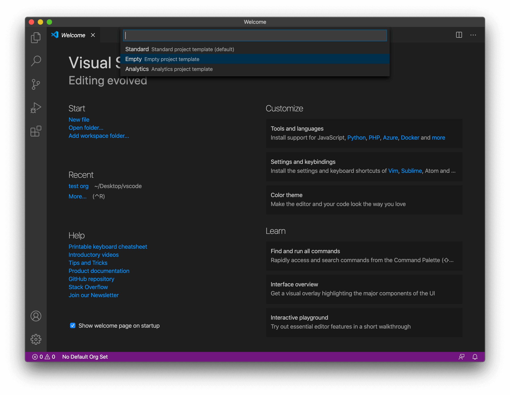
Luego le pedirá que nombre su proyecto. Nos conectaremos a nuestra organización de desarrolladores, así que nombrémosloMy Developer Org
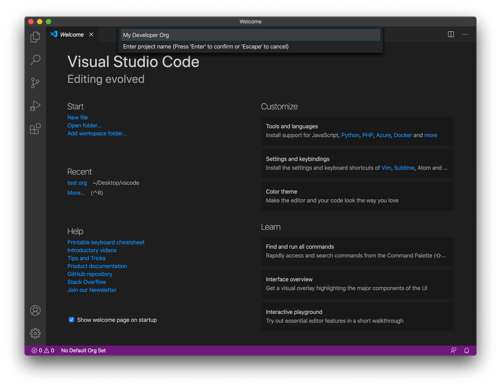
Next, it will open your file explorer and ask you where you want to save your project folder. I usually make a new folder in my Desktop called vscode folder and save it inside the folder. Your project folder will include all the
files that you will be writing and uploading, so make sure you save it in a place you can easily access and remember.
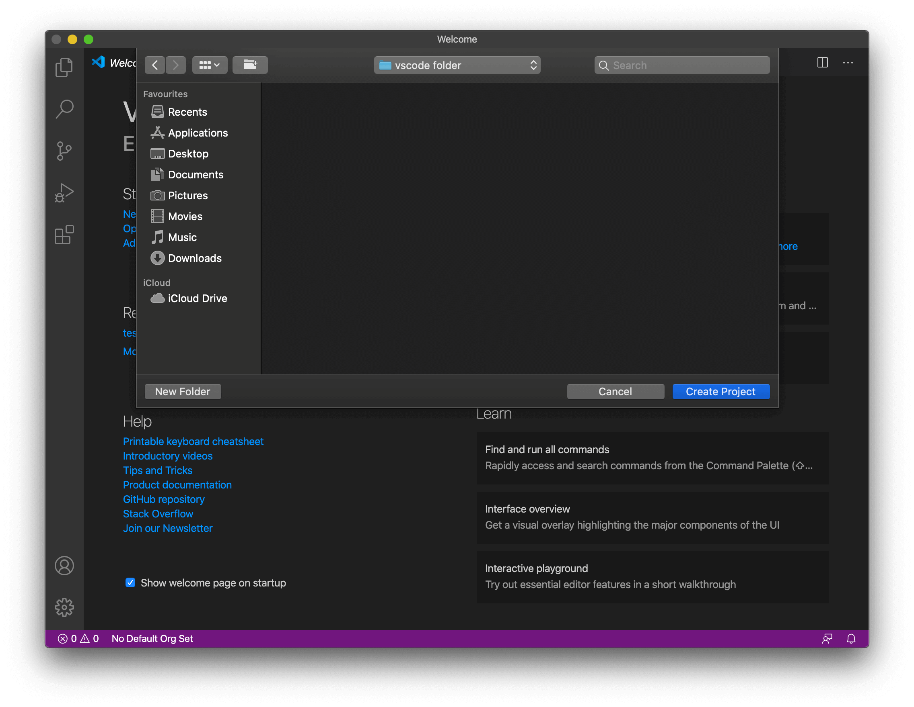
Una vez hecho esto, se le recibirá con una pantalla similar:
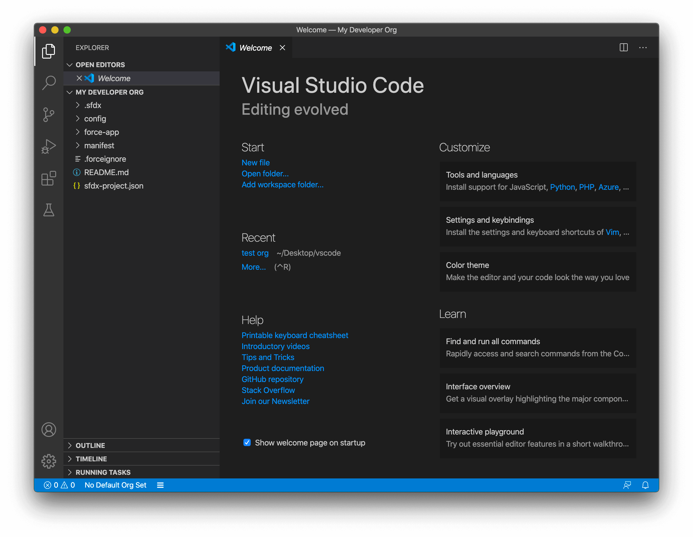
Press Command + Shift + P for macOS users or Control + Shift + P for Windows users and search for SFDX: Authorize an org.
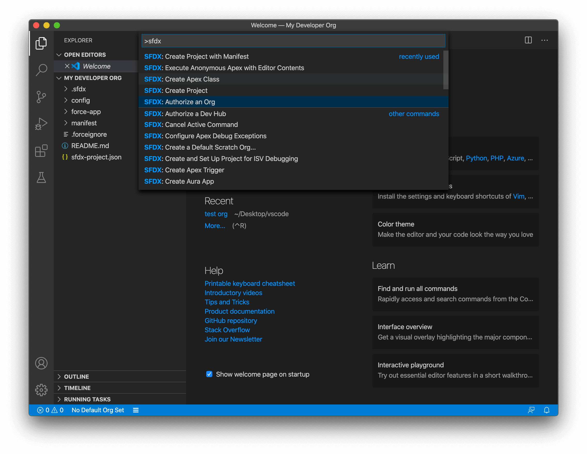
Seleccione Personalizado
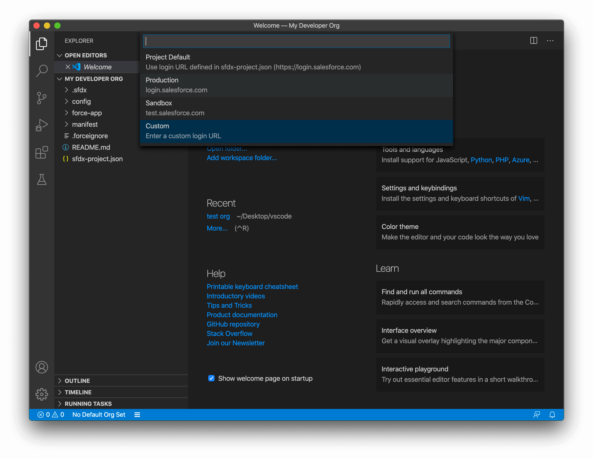
Now we need to grab the URL of our developer org. For this, sign in to your developer org, open Setup and Switch to Salesforce Classic. Once there, copy the first part of the url. For my case, my full url is
https://ap4.salesforce.com/home/home.jsp?source=lex but I need only the https://ap4.salesforce.com. This will be different for everyone, but the format stays the same. It's always
https://xxx.salesforce.com.
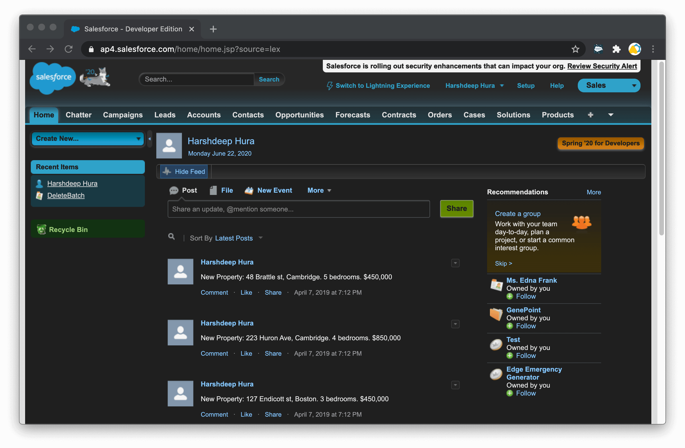
Copie esa URL en la sección URL de inicio de sesión personalizada de VSCode y presione Intro.
Now we need to name this org. I am naming mine DeveloperOrg and press enter.
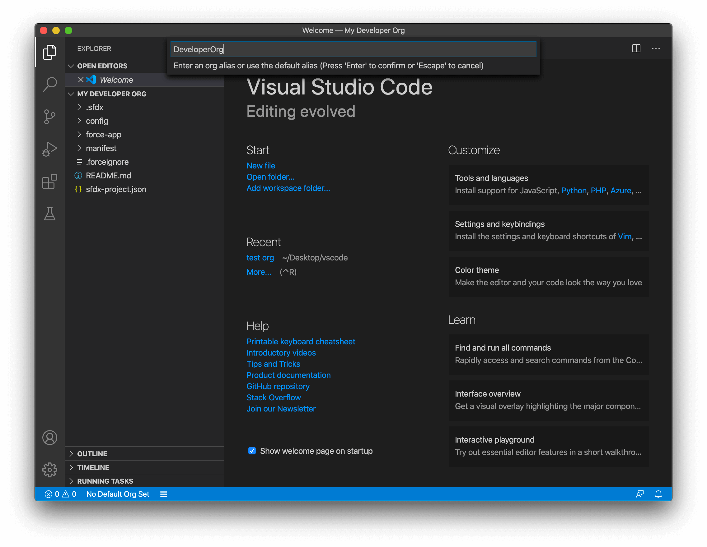
This will trigger a login screen in your default browser, login and authorize Salesforce CLI to access your org.
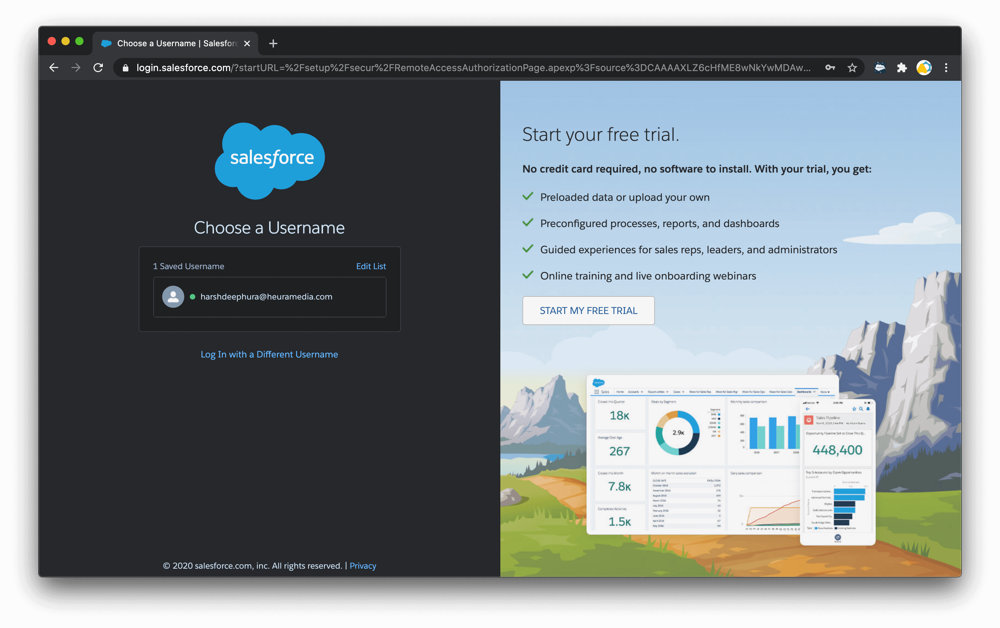
Ahora, en la barra azul inferior, haga clic enNo default org set
This will trigger a popup at top, select the Developer Org - name@email.com we just authorized
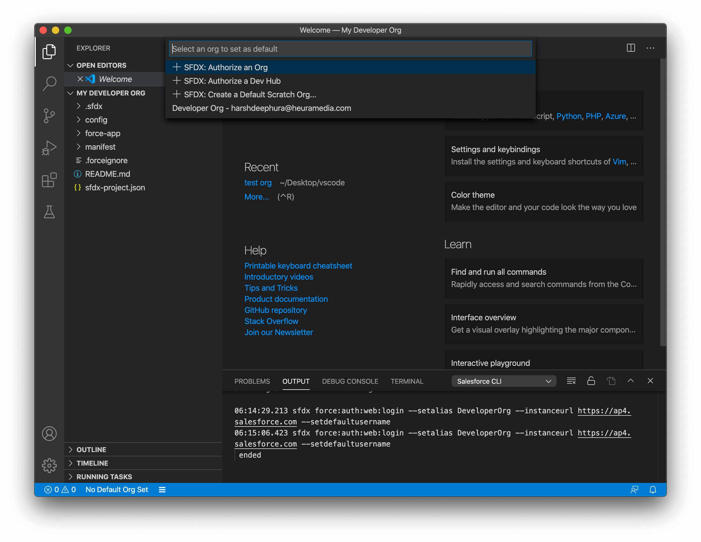
Si todo va bien, la barra inferior debería actualizarse para que tenga un aspecto similar al siguiente:
Su pantalla final debe verse similar a esto:
Tienes el nombre de tu proyecto abierto en el panel izquierdo en el explorador con un montón de carpetas como .sfdx, config, etc.
La barra inferior muestra el nombre de la organización que acaba de conectar.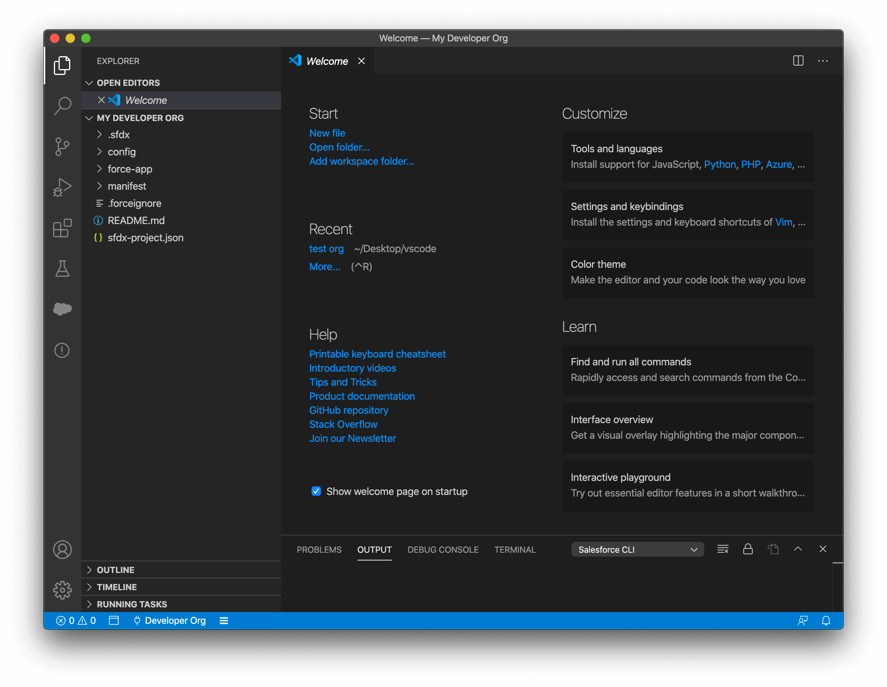